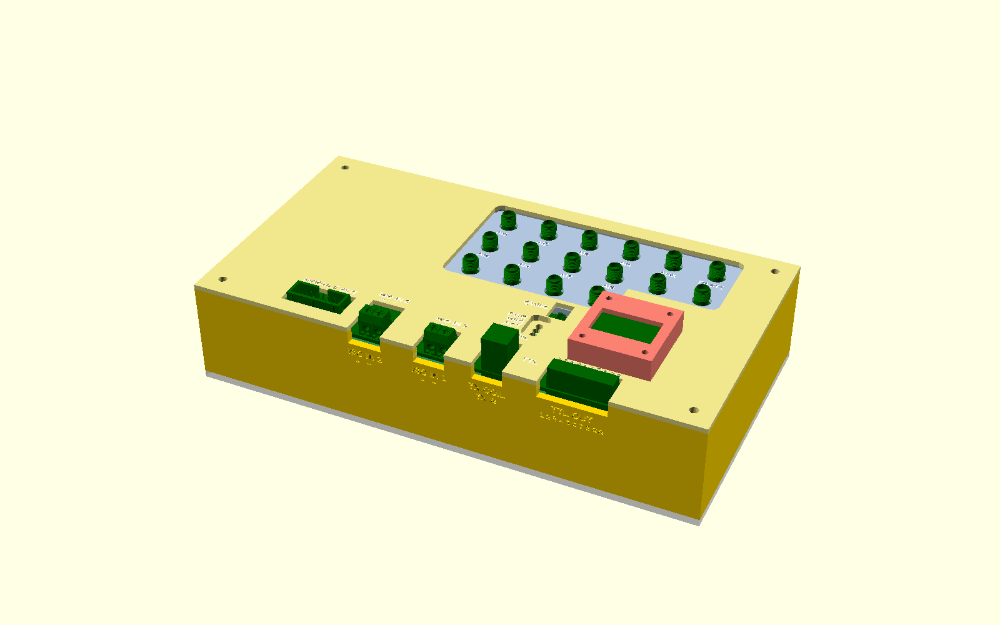
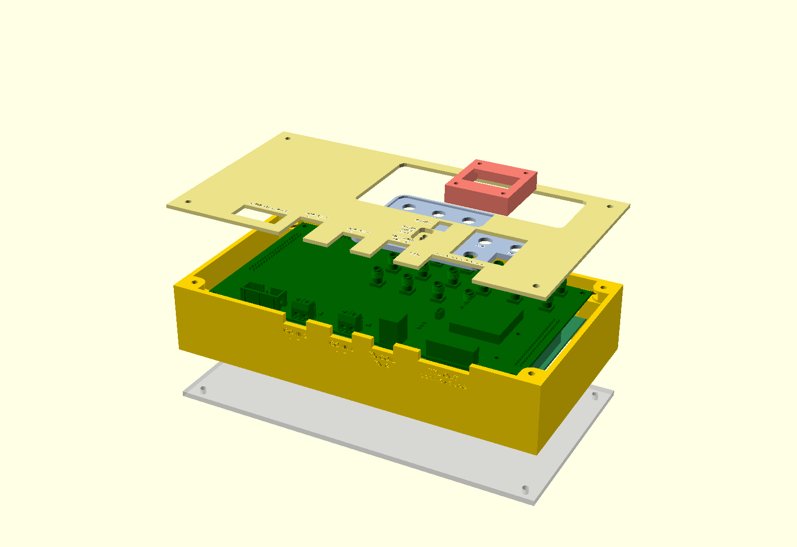
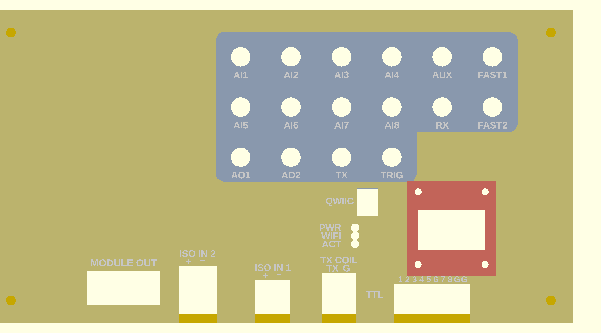
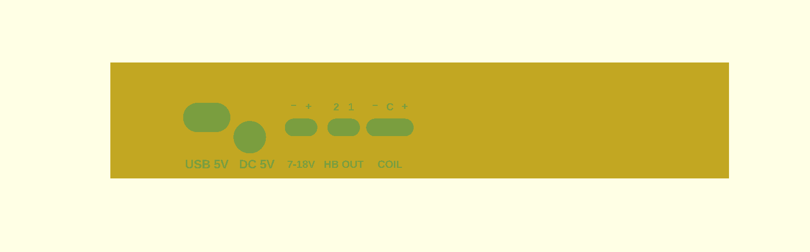
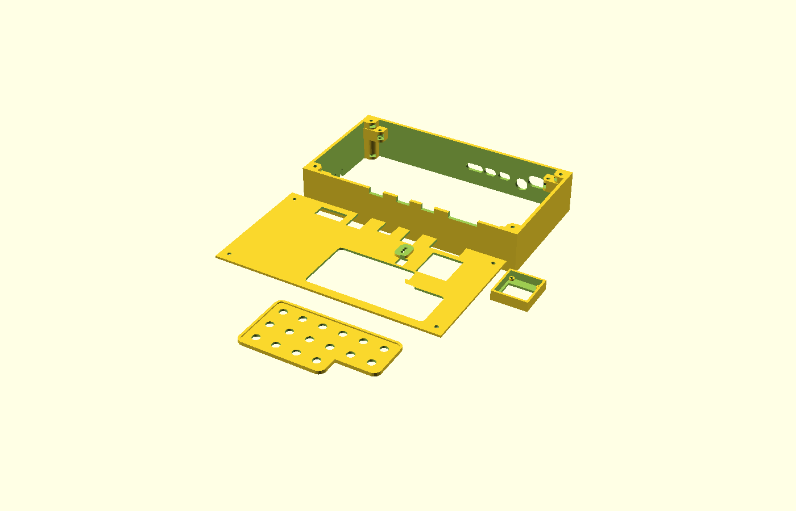

Project 3 · Basic Skills for Experimentalists · TIGP 2026
The class board turns an ESP32-S3 development board into a small laboratory instrument: eight analog inputs, two ±10 V outputs, eight TTL lines, a trigger, seven buffered module outputs, two isolated inputs, and a low-field NMR console (about 2 mT, protons precessing at 89 kHz). This page introduces the board and the housing designed for it. The firmware and the phone app that make it an instrument are being written now.

Two boards, each 180 × 100 mm and four layers, are stacked 11 mm apart on M3 stand-offs and joined by three 2 × 20 headers. The front panel is the face of the instrument: sixteen SMA connectors (analog in AI1–AI8, analog out AO1–AO2, TRIG, AUX, the fast TTL outputs FAST1–2, and the NMR transmit and receive lines TX and RX), an OLED display, three status LEDs, a Qwiic socket, the module-output header and four screw terminals on its front edge. The main board carries the circuitry, and its rear edge carries the power inputs (USB-C 5 V, a 5 V DC jack and an external 7–18 V input) and the coil terminals. The ESP32-S3 development board plugs into two sockets underneath.

Every dimension comes from the KiCad files and the board meshes, none from a ruler, and a clash test checks every point of the three board models against every part. The base is 209 × 112 mm. All fastening is M3 and M2 screws into hexagonal nut pockets that open at 45° into the box, so each nut slides in and cannot turn.
| Part | What it does | Made by |
|---|---|---|
| Base | Four 3 mm walls, corner columns, bosses that clamp both boards, openings for every rear connector and the dev board's two USB ports | 3D print |
| Cover | 2 mm plate on the walls, 5 mm over the panel for the chips; windows for the header, the Qwiic and the terminals | 3D print, two colours |
| SMA plate | Rests on the SMA jacks' bases so 6 mm of thread stands clear for the plug nuts; holes allow 0.5 mm of placement error per jack | 3D print, two colours |
| OLED hood | Four walls and a 2 mm top over the display, bolted through the module's own M2 holes | 3D print |
| Bottom lid | Closes the box; a screwdriver hole under every rear terminal screw | Laser cut, 3 mm acrylic |


Each name is taken from the boards' silkscreen and checked against the copper: every SMA centre pin, LED, TTL pin and terminal pole is traced to its net on the main board.

Status, 2 October 2026: the housing is designed and exported; nothing is printed yet. The firmware, the phone app and measurements with the instrument will be added to this page.